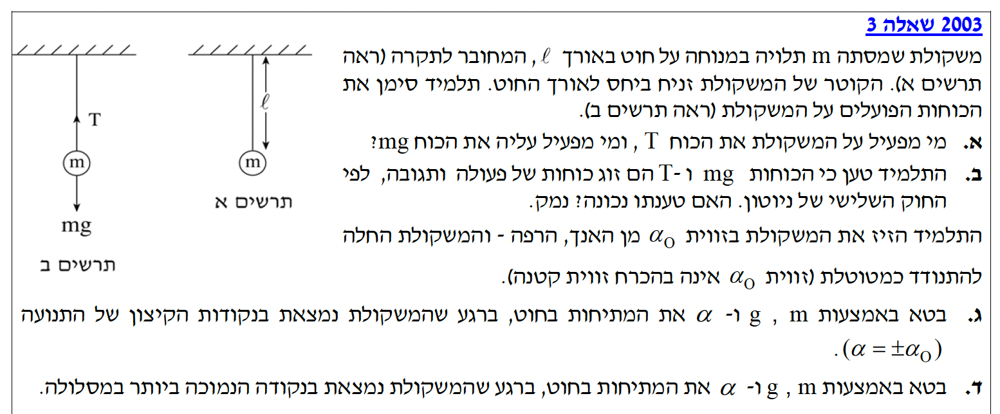
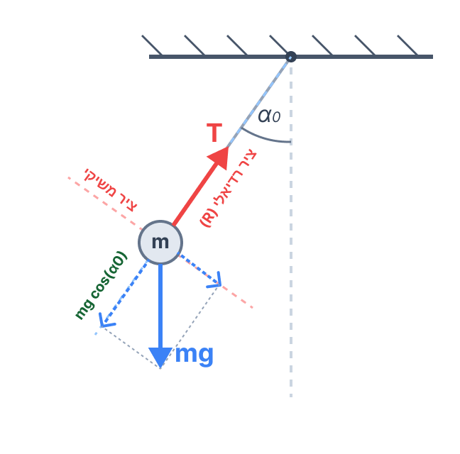
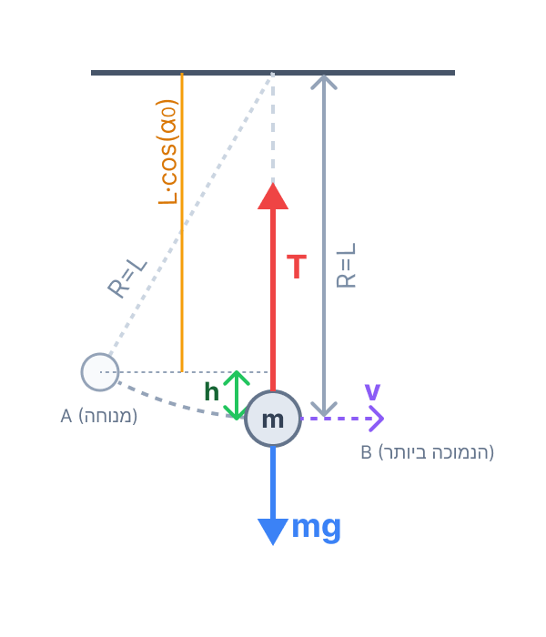

פתרון מודרך ומוסבר, צעד-אחר-צעד, כולל ניתוח כוחות ושיקולי אנרגיה.

השאלה מתחילה בניתוח כוחות בסיסי של משקולת התלויה במנוחה, ואז מתקדמת למצב דינמי שבו המשקולת נעה כמטוטלת. לכן נכון לחשוב עליה בשני רבדים: קודם כל מי מפעיל כל כוח ועל איזה גוף, ורק אחר כך איך הכוחות והאנרגיה משתנים לאורך התנועה.
בסעיפים הראשונים נדרשת הבנה מושגית של חוקי ניוטון, ובסעיפים האחרונים צריך לבחור בכל נקודה את הכלי הפיזיקלי המתאים: בנקודת הקיצון נוח לעבוד עם הציר הרדיאלי ולנצל את העובדה ש-\( v=0 \), ואילו בנקודה הנמוכה צריך לשלב שימור אנרגיה עם החוק השני של ניוטון.
זה בדיוק הסגנון של שאלות בגרות טובות: המעבר מהבנה מילולית של הכוחות אל חישוב מסודר בעזרת פירוק כוחות, תנועה מעגלית ושימור אנרגיה.
בסעיף זה אין שימוש בנוסחאות חישוביות מדף הנוסחאות, אלא בהבנה קונספטואלית של מושג הכוח. כל כוח בפיזיקה הוא אינטראקציה בין שני גופים.
כאשר אנו מזהים כוחות, אנו מחפשים איזה גוף מפעיל אותם. הכוח \( T \) הוא כוח מתיחות (Tension) המופעל במקום המגע הפיזי עם המשקולת. הגוף שנוגע במשקולת ומושך אותה כלפי מעלה הוא החוט. הכוח \( mg \) מייצג את כוח הכובד (גרביטציה) הפועל על המשקולת ממרחק. הגוף שמייצר את שדה הכבידה ומושך את המשקולת כלפי מטה אל מרכזו הוא כדור הארץ.
מסקנה: הכוח \( T \) מופעל על ידי החוט. הכוח \( mg \) מופעל על ידי כדור הארץ.
על פי החוק השלישי של ניוטון, זוג כוחות של פעולה ותגובה חייב לפעול על שני גופים שונים. במקרה שלנו, גם המתיחות \( T \) וגם כוח הכובד \( mg \) פועלים שניהם על אותו גוף בדיוק - על המשקולת. לכן הם אינם יכולים להיות זוג פעולה ותגובה.
אם נרצה לדעת מי הם בני הזוג האמיתיים של הכוחות האלו, נחשוב כך: כדור הארץ מושך את המשקולת למטה (כוח \( mg \)), ולכן "כוח התגובה" שלו הוא כוח שהמשקולת מפעילה על כדור הארץ ומושכת אותו למעלה. בדומה, החוט מושך את המשקולת למעלה (כוח \( T \)), ולכן "כוח התגובה" שלו הוא הכוח שהמשקולת מפעילה על החוט ומושכת אותו למטה.
מסקנה: טענת התלמיד אינה נכונה. הכוחות \( T \) ו-\( mg \) פועלים על אותו גוף, בעוד שזוג כוחות פעולה ותגובה על פי החוק השלישי של ניוטון חייב לפעול על שני גופים שונים.
כאשר המטוטלת מגיעה לנקודת הקיצון של מסלולה, היא משנה את כיוון תנועתה ולכן נעצרת להרף עין. משמעות הדבר היא שגודל המהירות שלה באותו רגע הוא אפס (\( v = 0 \)). לפי נוסחת התאוצה הרדיאלית שבדף הנוסחאות, אם נציב את המהירות ונזכור שרדיוס התנועה \( r \) הוא אורך החוט \( l \), נקבל:
כלומר, בנקודת הקיצון אין תאוצה לכיוון מרכז התנועה (הציר הרדיאלי). כעת, נשרטט תרשים כוחות (FBD) המציג את הכוחות הפועלים על המשקולת בנקודה זו:

נבחר מערכת צירים המותאמת לתנועה המעגלית: ציר רדיאלי (R) הפונה אל מרכז המעגל (נקודת התלייה), וציר משיקי המאונך לו. הכוח \( T \) נמצא במלואו על הציר הרדיאלי הפונה למרכז. את כוח הכובד \( mg \) נפרק לשני רכיבים לפי הזווית \( \alpha_0 \) (שנשמרת בין כוח הכובד להמשך הציר הרדיאלי עקב זוויות מתאימות/מתחלפות):
כעת נכתוב את החוק השני של ניוטון עבור הציר הרדיאלי בלבד. כאמור, בחרנו את הכיוון החיובי כלפי מרכז המעגל (כיוון התאוצה הרדיאלית תמיד), ולכן \( T \) מקבל סימן חיובי ורכיב הכובד מקבל סימן שלילי:
נעביר אגפים ונקבל את הביטוי עבור המתיחות:
מסקנה: \( T = mg \cos\alpha_0 \)
כדי למצוא את הכוחות בנקודה הנמוכה בעזרת החוק השני של ניוטון לתנועה מעגלית, אנו חייבים קודם כל לדעת מהי המהירות של המשקולת בנקודה זו. למציאת מהירות המשתנה כתלות במיקום, הכלי החזק ביותר שלנו הוא חוק שימור אנרגיה.
הכוחות הפועלים על המשקולת לאורך תנועתה הם כוח הכובד (כוח משמר) וכוח המתיחות \( T \). מכיוון שכוח המתיחות פועל תמיד בכיוון רדיאלי והמהירות היא תמיד בכיוון משיקי (מאונך לרדיוס), המתיחות אינה מבצעת עבודה (\( W_T = 0 \)). מאחר שאין עבודת כוחות לא-משמרים, האנרגיה המכנית במערכת נשמרת.
נגדיר את מישור הייחוס לאנרגיה כובדית (\( h=0 \)) בנקודה הנמוכה ביותר במסלול. כעת, עלינו למצוא מה היה הגובה \( h \) של המשקולת בנקודת הקיצון ההתחלתית שממנה שוחררה במנוחה. נביט בתרשים הגיאומטרי:

מהשרטוט ניתן לראות שאורך החוט השלם \( l \) שווה לסכום של ההיטל של אורך החוט בנקודת הקיצון (\( l \cos\alpha_0 \)) ועוד הגובה \( h \). לכן:
נרשום את משוואת שימור האנרגיה מנקודת הקיצון ההתחלתית (מצב 1, שם מהירותה אפס) אל הנקודה הנמוכה ביותר (מצב 2, שם גובהה אפס):
נציב את הביטוי עבור \( h \) שמצאנו:
נצמצם את המסה \( m \) משני האגפים ונכפול ב-2 כדי לבודד את \( v^2 \) (המהירות בריבוע), שכן נזדקק לה עבור נוסחת התאוצה הרדיאלית בשלב הבא:
כעת, המשקולת נעה במהירות בנקודה הנמוכה ביותר. נבחר שוב ציר רדיאלי (R) הפונה אל מרכז המעגל (כלפי מעלה במקרה זה). הכוחות הפועלים בציר זה הם המתיחות \( T \) הפועלת למעלה, וכוח הכובד \( mg \) הפועל למטה. נרשום את החוק השני של ניוטון בציר הרדיאלי:
נעביר את \( mg \) לאגף הימני:
כעת נציב את הביטוי עבור \( v^2 \) שמצאנו בשלב האנרגיה אל תוך המשוואה של הכוחות:
נשים לב שאורך החוט \( l \) מצטמצם במונה ובמכנה. נסדר את המשוואה ונפתח סוגריים כדי לקבל את התשובה הסופית:
מסקנה: \( T = mg(3 - 2\cos\alpha_0) \)